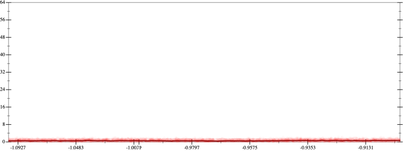
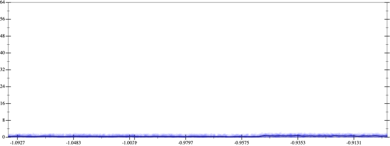
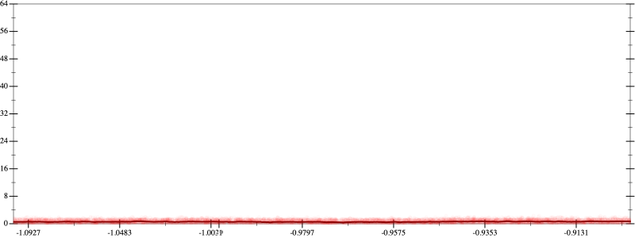
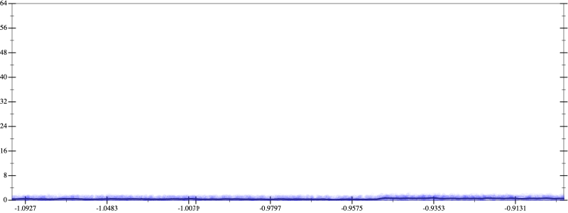

Initial program 0.6
\[\left(\left(\left(\left(\left(\left(\left(1.0 + -8.0 \cdot x\right) + 14.0 \cdot \left(x \cdot x\right)\right) + -9.333333 \cdot \left(\left(x \cdot x\right) \cdot x\right)\right) + 2.916667 \cdot \left(\left(\left(x \cdot x\right) \cdot x\right) \cdot x\right)\right) + -0.466667 \cdot \left(\left(\left(\left(x \cdot x\right) \cdot x\right) \cdot x\right) \cdot x\right)\right) + 0.038889 \cdot \left(\left(\left(\left(\left(x \cdot x\right) \cdot x\right) \cdot x\right) \cdot x\right) \cdot x\right)\right) + -0.001587 \cdot \left(\left(\left(\left(\left(\left(x \cdot x\right) \cdot x\right) \cdot x\right) \cdot x\right) \cdot x\right) \cdot x\right)\right) + 2.5 \cdot 10^{-05} \cdot \left(\left(\left(\left(\left(\left(\left(x \cdot x\right) \cdot x\right) \cdot x\right) \cdot x\right) \cdot x\right) \cdot x\right) \cdot x\right)\]
Applied simplify0.4
\[\leadsto \color{blue}{\left({\left(x \cdot x\right)}^{3} \cdot \left(2.5 \cdot 10^{-05} \cdot \left(x \cdot x\right)\right) + {\left(x \cdot x\right)}^{3} \cdot \left(-0.001587 \cdot x + 0.038889\right)\right) + \left(\left(\left(x \cdot x\right) \cdot \left(-9.333333 \cdot x + 14.0\right) + \left(\left(x \cdot x\right) \cdot \left(x \cdot x\right)\right) \cdot \left(2.916667 + -0.466667 \cdot x\right)\right) + \left(x \cdot -8.0 + 1.0\right)\right)}\]
Taylor expanded around 0 0.4
\[\leadsto \left({\left(x \cdot x\right)}^{3} \cdot \left(2.5 \cdot 10^{-05} \cdot \left(x \cdot x\right)\right) + \color{blue}{\left(0.038889 \cdot {x}^{6} - 0.001587 \cdot {x}^{7}\right)}\right) + \left(\left(\left(x \cdot x\right) \cdot \left(-9.333333 \cdot x + 14.0\right) + \left(\left(x \cdot x\right) \cdot \left(x \cdot x\right)\right) \cdot \left(2.916667 + -0.466667 \cdot x\right)\right) + \left(x \cdot -8.0 + 1.0\right)\right)\]
Applied simplify0.4
\[\leadsto \color{blue}{\left(\left(\left(\left(x \cdot x\right) \cdot \left(x \cdot x\right)\right) \cdot \left(-0.466667 \cdot x + 2.916667\right) + \left(1.0 + -8.0 \cdot x\right)\right) + \left(\left(0.038889 \cdot {x}^{6} - 0.001587 \cdot {x}^{7}\right) + 2.5 \cdot 10^{-05} \cdot {\left(x \cdot x\right)}^{\left(3 + 1\right)}\right)\right) + \left(x \cdot x\right) \cdot \left(x \cdot -9.333333 + 14.0\right)}\]
- Using strategy
rm Applied flip3-+0.3
\[\leadsto \left(\left(\left(\left(x \cdot x\right) \cdot \left(x \cdot x\right)\right) \cdot \left(-0.466667 \cdot x + 2.916667\right) + \color{blue}{\frac{{1.0}^{3} + {\left(-8.0 \cdot x\right)}^{3}}{1.0 \cdot 1.0 + \left(\left(-8.0 \cdot x\right) \cdot \left(-8.0 \cdot x\right) - 1.0 \cdot \left(-8.0 \cdot x\right)\right)}}\right) + \left(\left(0.038889 \cdot {x}^{6} - 0.001587 \cdot {x}^{7}\right) + 2.5 \cdot 10^{-05} \cdot {\left(x \cdot x\right)}^{\left(3 + 1\right)}\right)\right) + \left(x \cdot x\right) \cdot \left(x \cdot -9.333333 + 14.0\right)\]
Applied flip-+0.3
\[\leadsto \left(\left(\left(\left(x \cdot x\right) \cdot \left(x \cdot x\right)\right) \cdot \color{blue}{\frac{\left(-0.466667 \cdot x\right) \cdot \left(-0.466667 \cdot x\right) - 2.916667 \cdot 2.916667}{-0.466667 \cdot x - 2.916667}} + \frac{{1.0}^{3} + {\left(-8.0 \cdot x\right)}^{3}}{1.0 \cdot 1.0 + \left(\left(-8.0 \cdot x\right) \cdot \left(-8.0 \cdot x\right) - 1.0 \cdot \left(-8.0 \cdot x\right)\right)}\right) + \left(\left(0.038889 \cdot {x}^{6} - 0.001587 \cdot {x}^{7}\right) + 2.5 \cdot 10^{-05} \cdot {\left(x \cdot x\right)}^{\left(3 + 1\right)}\right)\right) + \left(x \cdot x\right) \cdot \left(x \cdot -9.333333 + 14.0\right)\]
Applied associate-*r/0.3
\[\leadsto \left(\left(\color{blue}{\frac{\left(\left(x \cdot x\right) \cdot \left(x \cdot x\right)\right) \cdot \left(\left(-0.466667 \cdot x\right) \cdot \left(-0.466667 \cdot x\right) - 2.916667 \cdot 2.916667\right)}{-0.466667 \cdot x - 2.916667}} + \frac{{1.0}^{3} + {\left(-8.0 \cdot x\right)}^{3}}{1.0 \cdot 1.0 + \left(\left(-8.0 \cdot x\right) \cdot \left(-8.0 \cdot x\right) - 1.0 \cdot \left(-8.0 \cdot x\right)\right)}\right) + \left(\left(0.038889 \cdot {x}^{6} - 0.001587 \cdot {x}^{7}\right) + 2.5 \cdot 10^{-05} \cdot {\left(x \cdot x\right)}^{\left(3 + 1\right)}\right)\right) + \left(x \cdot x\right) \cdot \left(x \cdot -9.333333 + 14.0\right)\]
Applied frac-add0.4
\[\leadsto \left(\color{blue}{\frac{\left(\left(\left(x \cdot x\right) \cdot \left(x \cdot x\right)\right) \cdot \left(\left(-0.466667 \cdot x\right) \cdot \left(-0.466667 \cdot x\right) - 2.916667 \cdot 2.916667\right)\right) \cdot \left(1.0 \cdot 1.0 + \left(\left(-8.0 \cdot x\right) \cdot \left(-8.0 \cdot x\right) - 1.0 \cdot \left(-8.0 \cdot x\right)\right)\right) + \left(-0.466667 \cdot x - 2.916667\right) \cdot \left({1.0}^{3} + {\left(-8.0 \cdot x\right)}^{3}\right)}{\left(-0.466667 \cdot x - 2.916667\right) \cdot \left(1.0 \cdot 1.0 + \left(\left(-8.0 \cdot x\right) \cdot \left(-8.0 \cdot x\right) - 1.0 \cdot \left(-8.0 \cdot x\right)\right)\right)}} + \left(\left(0.038889 \cdot {x}^{6} - 0.001587 \cdot {x}^{7}\right) + 2.5 \cdot 10^{-05} \cdot {\left(x \cdot x\right)}^{\left(3 + 1\right)}\right)\right) + \left(x \cdot x\right) \cdot \left(x \cdot -9.333333 + 14.0\right)\]
Applied simplify0.3
\[\leadsto \left(\frac{\color{blue}{\left(\left(-8.0 \cdot x - 1.0\right) \cdot \left(-8.0 \cdot x\right) + 1.0 \cdot 1.0\right) \cdot \left(\left(\left(-0.466667 \cdot x - 2.916667\right) \cdot \left(-0.466667 \cdot x + 2.916667\right)\right) \cdot \left(\left(x \cdot x\right) \cdot \left(x \cdot x\right)\right)\right) + \left({1.0}^{3} + {\left(-8.0 \cdot x\right)}^{3}\right) \cdot \left(-0.466667 \cdot x - 2.916667\right)}}{\left(-0.466667 \cdot x - 2.916667\right) \cdot \left(1.0 \cdot 1.0 + \left(\left(-8.0 \cdot x\right) \cdot \left(-8.0 \cdot x\right) - 1.0 \cdot \left(-8.0 \cdot x\right)\right)\right)} + \left(\left(0.038889 \cdot {x}^{6} - 0.001587 \cdot {x}^{7}\right) + 2.5 \cdot 10^{-05} \cdot {\left(x \cdot x\right)}^{\left(3 + 1\right)}\right)\right) + \left(x \cdot x\right) \cdot \left(x \cdot -9.333333 + 14.0\right)\]
Applied simplify0.3
\[\leadsto \left(\frac{\left(\left(-8.0 \cdot x - 1.0\right) \cdot \left(-8.0 \cdot x\right) + 1.0 \cdot 1.0\right) \cdot \left(\left(\left(-0.466667 \cdot x - 2.916667\right) \cdot \left(-0.466667 \cdot x + 2.916667\right)\right) \cdot \left(\left(x \cdot x\right) \cdot \left(x \cdot x\right)\right)\right) + \left({1.0}^{3} + {\left(-8.0 \cdot x\right)}^{3}\right) \cdot \left(-0.466667 \cdot x - 2.916667\right)}{\color{blue}{\left(-0.466667 \cdot x - 2.916667\right) \cdot \left(\left(-8.0 \cdot x\right) \cdot \left(-8.0 \cdot x\right) - 1.0 \cdot \left(-8.0 \cdot x - 1.0\right)\right)}} + \left(\left(0.038889 \cdot {x}^{6} - 0.001587 \cdot {x}^{7}\right) + 2.5 \cdot 10^{-05} \cdot {\left(x \cdot x\right)}^{\left(3 + 1\right)}\right)\right) + \left(x \cdot x\right) \cdot \left(x \cdot -9.333333 + 14.0\right)\]
- Using strategy
rm Applied flip3--0.4
\[\leadsto \left(\frac{\left(\left(-8.0 \cdot x - 1.0\right) \cdot \left(-8.0 \cdot x\right) + 1.0 \cdot 1.0\right) \cdot \left(\left(\left(-0.466667 \cdot x - 2.916667\right) \cdot \left(-0.466667 \cdot x + 2.916667\right)\right) \cdot \left(\left(x \cdot x\right) \cdot \left(x \cdot x\right)\right)\right) + \left({1.0}^{3} + {\left(-8.0 \cdot x\right)}^{3}\right) \cdot \left(-0.466667 \cdot x - 2.916667\right)}{\left(-0.466667 \cdot x - 2.916667\right) \cdot \color{blue}{\frac{{\left(\left(-8.0 \cdot x\right) \cdot \left(-8.0 \cdot x\right)\right)}^{3} - {\left(1.0 \cdot \left(-8.0 \cdot x - 1.0\right)\right)}^{3}}{\left(\left(-8.0 \cdot x\right) \cdot \left(-8.0 \cdot x\right)\right) \cdot \left(\left(-8.0 \cdot x\right) \cdot \left(-8.0 \cdot x\right)\right) + \left(\left(1.0 \cdot \left(-8.0 \cdot x - 1.0\right)\right) \cdot \left(1.0 \cdot \left(-8.0 \cdot x - 1.0\right)\right) + \left(\left(-8.0 \cdot x\right) \cdot \left(-8.0 \cdot x\right)\right) \cdot \left(1.0 \cdot \left(-8.0 \cdot x - 1.0\right)\right)\right)}}} + \left(\left(0.038889 \cdot {x}^{6} - 0.001587 \cdot {x}^{7}\right) + 2.5 \cdot 10^{-05} \cdot {\left(x \cdot x\right)}^{\left(3 + 1\right)}\right)\right) + \left(x \cdot x\right) \cdot \left(x \cdot -9.333333 + 14.0\right)\]
Applied flip--0.5
\[\leadsto \left(\frac{\left(\left(-8.0 \cdot x - 1.0\right) \cdot \left(-8.0 \cdot x\right) + 1.0 \cdot 1.0\right) \cdot \left(\left(\left(-0.466667 \cdot x - 2.916667\right) \cdot \left(-0.466667 \cdot x + 2.916667\right)\right) \cdot \left(\left(x \cdot x\right) \cdot \left(x \cdot x\right)\right)\right) + \left({1.0}^{3} + {\left(-8.0 \cdot x\right)}^{3}\right) \cdot \left(-0.466667 \cdot x - 2.916667\right)}{\color{blue}{\frac{\left(-0.466667 \cdot x\right) \cdot \left(-0.466667 \cdot x\right) - 2.916667 \cdot 2.916667}{-0.466667 \cdot x + 2.916667}} \cdot \frac{{\left(\left(-8.0 \cdot x\right) \cdot \left(-8.0 \cdot x\right)\right)}^{3} - {\left(1.0 \cdot \left(-8.0 \cdot x - 1.0\right)\right)}^{3}}{\left(\left(-8.0 \cdot x\right) \cdot \left(-8.0 \cdot x\right)\right) \cdot \left(\left(-8.0 \cdot x\right) \cdot \left(-8.0 \cdot x\right)\right) + \left(\left(1.0 \cdot \left(-8.0 \cdot x - 1.0\right)\right) \cdot \left(1.0 \cdot \left(-8.0 \cdot x - 1.0\right)\right) + \left(\left(-8.0 \cdot x\right) \cdot \left(-8.0 \cdot x\right)\right) \cdot \left(1.0 \cdot \left(-8.0 \cdot x - 1.0\right)\right)\right)}} + \left(\left(0.038889 \cdot {x}^{6} - 0.001587 \cdot {x}^{7}\right) + 2.5 \cdot 10^{-05} \cdot {\left(x \cdot x\right)}^{\left(3 + 1\right)}\right)\right) + \left(x \cdot x\right) \cdot \left(x \cdot -9.333333 + 14.0\right)\]
Applied frac-times0.4
\[\leadsto \left(\frac{\left(\left(-8.0 \cdot x - 1.0\right) \cdot \left(-8.0 \cdot x\right) + 1.0 \cdot 1.0\right) \cdot \left(\left(\left(-0.466667 \cdot x - 2.916667\right) \cdot \left(-0.466667 \cdot x + 2.916667\right)\right) \cdot \left(\left(x \cdot x\right) \cdot \left(x \cdot x\right)\right)\right) + \left({1.0}^{3} + {\left(-8.0 \cdot x\right)}^{3}\right) \cdot \left(-0.466667 \cdot x - 2.916667\right)}{\color{blue}{\frac{\left(\left(-0.466667 \cdot x\right) \cdot \left(-0.466667 \cdot x\right) - 2.916667 \cdot 2.916667\right) \cdot \left({\left(\left(-8.0 \cdot x\right) \cdot \left(-8.0 \cdot x\right)\right)}^{3} - {\left(1.0 \cdot \left(-8.0 \cdot x - 1.0\right)\right)}^{3}\right)}{\left(-0.466667 \cdot x + 2.916667\right) \cdot \left(\left(\left(-8.0 \cdot x\right) \cdot \left(-8.0 \cdot x\right)\right) \cdot \left(\left(-8.0 \cdot x\right) \cdot \left(-8.0 \cdot x\right)\right) + \left(\left(1.0 \cdot \left(-8.0 \cdot x - 1.0\right)\right) \cdot \left(1.0 \cdot \left(-8.0 \cdot x - 1.0\right)\right) + \left(\left(-8.0 \cdot x\right) \cdot \left(-8.0 \cdot x\right)\right) \cdot \left(1.0 \cdot \left(-8.0 \cdot x - 1.0\right)\right)\right)\right)}}} + \left(\left(0.038889 \cdot {x}^{6} - 0.001587 \cdot {x}^{7}\right) + 2.5 \cdot 10^{-05} \cdot {\left(x \cdot x\right)}^{\left(3 + 1\right)}\right)\right) + \left(x \cdot x\right) \cdot \left(x \cdot -9.333333 + 14.0\right)\]
Applied associate-/r/0.4
\[\leadsto \left(\color{blue}{\frac{\left(\left(-8.0 \cdot x - 1.0\right) \cdot \left(-8.0 \cdot x\right) + 1.0 \cdot 1.0\right) \cdot \left(\left(\left(-0.466667 \cdot x - 2.916667\right) \cdot \left(-0.466667 \cdot x + 2.916667\right)\right) \cdot \left(\left(x \cdot x\right) \cdot \left(x \cdot x\right)\right)\right) + \left({1.0}^{3} + {\left(-8.0 \cdot x\right)}^{3}\right) \cdot \left(-0.466667 \cdot x - 2.916667\right)}{\left(\left(-0.466667 \cdot x\right) \cdot \left(-0.466667 \cdot x\right) - 2.916667 \cdot 2.916667\right) \cdot \left({\left(\left(-8.0 \cdot x\right) \cdot \left(-8.0 \cdot x\right)\right)}^{3} - {\left(1.0 \cdot \left(-8.0 \cdot x - 1.0\right)\right)}^{3}\right)} \cdot \left(\left(-0.466667 \cdot x + 2.916667\right) \cdot \left(\left(\left(-8.0 \cdot x\right) \cdot \left(-8.0 \cdot x\right)\right) \cdot \left(\left(-8.0 \cdot x\right) \cdot \left(-8.0 \cdot x\right)\right) + \left(\left(1.0 \cdot \left(-8.0 \cdot x - 1.0\right)\right) \cdot \left(1.0 \cdot \left(-8.0 \cdot x - 1.0\right)\right) + \left(\left(-8.0 \cdot x\right) \cdot \left(-8.0 \cdot x\right)\right) \cdot \left(1.0 \cdot \left(-8.0 \cdot x - 1.0\right)\right)\right)\right)\right)} + \left(\left(0.038889 \cdot {x}^{6} - 0.001587 \cdot {x}^{7}\right) + 2.5 \cdot 10^{-05} \cdot {\left(x \cdot x\right)}^{\left(3 + 1\right)}\right)\right) + \left(x \cdot x\right) \cdot \left(x \cdot -9.333333 + 14.0\right)\]
 
